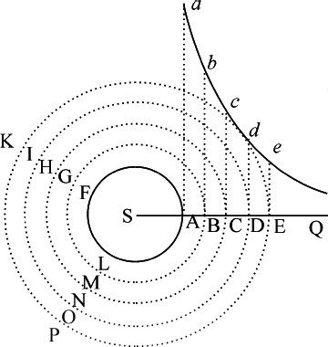
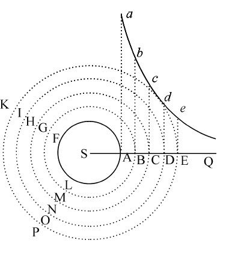
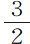
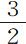
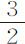
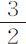
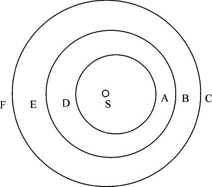

第9章
流体的圆运动
假设
由于流体各部分缺乏润滑而产生的阻力，在其他条件不变的情况下，正比于使该流体各部分相互分离的速度。
命题51 定理39
如果一根无限长的固体圆柱体在均匀而无限的介质中，沿一位置给定的轴均匀转动，且流体只受到该柱体的冲击而转动，流体各部分在运动中保持均匀，则流体各部分的周期正比于它们到柱体的轴的距离。

令AFL为关于轴S均匀转动的圆柱体，令同心圆BGM，CHN，DIO，EKP等把流体分为无限个厚度相同的同心柱形固体层。因为流体是均匀的，邻接的层相互间的压力（由假设）正比于它们相互间的移动，也正比于产生该压力的相邻接的表面。如果任意一层对其内侧的压力大于或小于对其外侧的压力，则较强的压力将占优势，并对该层的运动产生加速或减速，这取决于它与该层的运动方向是一致还是相反。所以，每一层的运动都能保持均匀，两侧的压力相等而方向相反。所以，由于压力正比于邻接表面，并正比于相互间的移动，该移动将反比于表面，即反比于该表面到轴的距离。但关于轴的角运动差正比于该移动除以距离，或正比于该移动而反比于该移动除以距离；亦即，将这两个比式相乘，反比于距离的平方。所以，如果作无限直线SABCDEQ不同部分上的垂线Aa ，Bb ，Cc ，Dd ，Ee 等，则反比于SA，SB，SC，SD，SE等的平方，设一条双曲线通过这些垂线的端点，则这些差的和，即总角运动，将正比于对应线段Aa ，Bb ，Cc ，Dd ，Ee 的和，即（如果无限增加层数而减小其宽度，以构成均匀介质的流体）正比于与该和相似的双曲线面积Aa Q，Bb Q，Cc Q，Dd Q，Ee Q等；时间则反比于角运动，也反比于这些面积。所以，任意粒子D的周期，反比于面积Dd Q，即（由已知的求曲线面积法）正比于距离SD。
证毕。
推论Ⅰ．流体粒子的角运动反比于它们到柱体轴的距离，而绝对速度相等。
推论Ⅱ．如果流体盛在无限长柱体容器中，流体内又置一柱体，两柱体绕公共轴转动，且它们的转动时间正比于直径，流体各部分保持其运动，则不同部分的周期时间正比于到柱体轴的距离。
推论Ⅲ．如果在柱体和这样运动的流体上增加或减去任意共同的角运动量，则因为这种新的运动不改变流体各部分间的相互摩擦，各部分间的运动也不变；因为各部分间的移动决定于摩擦。两侧的摩擦方向相反，各部分的加速并不多于减速，将维持其运动。
推论Ⅳ．如果从整个柱体和流体的系统中消去外层圆柱的全部角运动，即得到静止柱体内的流体运动。
推论Ⅴ．如果流体与外层圆柱体是静止的，内侧圆柱体均匀转动，则会把圆运动传递给流体，并逐渐传遍整个流体；运动将逐渐增加，直至流体各部分都获得推论Ⅳ中求出的运动。
推论Ⅵ．因为流体倾向于把它的运动传播得更远，其冲击将会带动外层圆柱与它一同运动，除非该柱体受反向力作用；它的运动一直要加速到两个柱体的周期相等。但如果外柱体受力而固定不动，则它产生阻碍流体运动的作用；除非内柱体受某种作用于其上的外力推动而维持其运动，它将逐渐停留。
所有这些可以通过在静止深水中的实验加以证实。
命题52 定理40
如果在均匀无限流体中，固体球绕一已知的方向的轴均匀转动，流体只受这种球体的冲击而转动；且流体各部分在运动中保持均匀；则流体各部分的周期正比于它们到球心的距离。

情形1．令AFL为绕轴S均匀转动的球，共心圆BGM，CHN，DIO，EKP等把流体分为无数个等厚的共心球层。设这些球层是固体的。因为流体是均匀的，邻接球层间的压力（由前提）正比于相互间的移动，以及受该压力的邻接表面，如果任一球层对其内侧的压力大于或小于对外侧的压力，则较大的压力将占优势，使球层的速度被加速或减速，这取决于该力与球层运动方向一致或相反。所以每一球层都保持其均匀运动，其必要条件是球层两侧压力相等，方向相反。所以，由于压力正比于邻接表面，还正比于相互间的移动，而移动又反比于表面，即反比于表面到球心距离的平方。但关于轴的角运动差正比于移动除以距离，或正比于移动反比于距离；即，将这些比式相乘，反比于距离的立方。所以，如果在无限直线SABCDEQ的不同部分作垂线Ab，Bb ，Cc ，Dd ，Ee 等，反比于差的和SA，SB，SC，SD，SE等即全部角运动的立方，则将正比于对应线段Aa ，Bb ，Cc ，Dd ，Ee 等的和，即（如果使球层数无限增加，厚度无限减小，构成均匀流体介质），正比于相似于该和的双曲线面积Aa Q，Bb Q，Cc Q，Dd Q，Ee Q等；其周期则反比于角运动，还反比于这些面积。所以，任意球层DIO的周期时间反比于面积Dd Q，即（由已知求面积法），正比于距离SD的平方。这正是首先要证明的。
情形2．由球心作大量无限长直线，它们与轴所成角为给定的，相互间的差相等；设这些直线绕轴转动，球层被分割为无数圆环；则每一个圆环都有四个圆环与它邻接，即，其内侧一个，外侧一个，两边还各有一个。现在，这些圆环不能受到相等的力推动，内环与外环的摩擦方向相反，除非运动的传递按情形1所证明的规律进行。这可以由上述证明得出。所以，任意一组由球沿直线向外延伸的圆环，都将按情形1的规律运动，除非设它受到两边圆环的摩擦。但根据该规律，运动中不存在这种情况，所以不会阻碍圆环按该规律运动。如果到球的距离相等的圆环在极点的转动比在黄道点快或慢，则如果慢，相互摩擦使其加速，而如果快，则使其减速；致使周期时间逐渐趋于相等，这可以由情形1推知。所以这种摩擦完全不阻碍运动按情形1的规律进行，因此该规律是成立的；即不同圆环的周期时间正比于它们到球心的距离的平方。这是要证明的第二点。
情形3．现设每个圆环又被横截面分割为无数构成绝对均匀流体物质的粒子；因为这些截面与圆运动规律无关，只起产生流体物质的作用，圆运动规律将像从前一样维持不变。所有极小的圆环都不因这些截面而改变其大小和相互摩擦，或都作相同的变化。所以，原因的比例不变，效果的比例也保持不变；即，运动与周期时间的比例不变。
证毕。
如果由此而产生的正比于圆运动的向心力，在黄道点大于极点，则必定有某种原因发生作用，把各粒子维系在其轨道上；否则在黄道上的物质总是飞离中心，并在涡旋外侧绕极点转动，再由此以连续环绕沿轴回到极点。
推论Ⅰ．因此流体各部分绕球轴的角运动反比于到球心的距离的平方，其绝对速度反比于同一平方除以到轴的距离。
推论Ⅱ．如果球体在相似而无限的且匀速运动的静止流体中绕位置给定的轴均匀转动，则它传递给流体的转动运动类似于涡旋的运动，该运动将向无限逐渐传播；并且，该运动将在流体各部分中逐渐增加，直到各部分的周期时间正比于到球的距离的平方。
推论Ⅲ．因为涡旋内部由于其速度较大而持续压迫并推动外部，并通过该作用把运动传递给它们，与此同时外部又把相同的运动量传递给更远的部分，并保持其运动量持续不变，不难理解该运动逐渐由涡旋中心向外围转移，直到它相当平复并消失于其周边无限延伸的边际。任意两个与该涡旋共心的球面之间的物质决不会被加速；因为这些物质总是把它由靠近球心处所得到的运动传递给靠近边缘的物质。
推论Ⅳ．所以，为了维持涡旋的相同运动状态，球体需要从某种动力来源获得与它连续传递给涡旋物质的相等的运动量。没有这一来源，不断把其运动向外传递的球体和涡旋内部，无疑将逐渐地减慢运动，最后不再旋转。
推论Ⅴ．如果另一只球在距中心某距离处漂浮，并在同时受某力作用绕一给定的倾斜轴均速转动，则该球将激起流体像涡旋一样地转动；起初这个新的小涡旋将与其转动球一同绕另一中心转动；同时它的运动传播得越来越远，逐渐向无限延伸，方式与第一个涡旋相同。出于同样原因，新涡旋的球体被卷入另一个涡旋的运动，而这另一个涡旋的球又被卷入新涡旋的运动，使得两只球都绕某个中间点转动，并由于这种圆运动而相互远离，除非有某种力维系着它们。此后，如果使二球维持其运动的不变作用力中止，则一切将按力学规律运动，球的运动将逐渐停止（由推论Ⅲ和Ⅳ谈到的原因），涡旋最终将完全静止。
推论Ⅵ．如果在给定处所的几只球以给定速度绕位置已知的轴均匀转动，则它们激起同样多的涡旋并伸展至无限。因为根据与任意一个球把其运动传向无限远处的相同的道理，每个分离的球都把其运动向无限远传播；这使得无限流体的每一部分都受到所有球的运动的作用而运动。所以各涡旋之间没有明确分界，而是逐渐相互介入；而由于涡旋的相互作用，球将逐渐离开其原先位置，正如前一推论所述；它们相互之间也不可能维持一确定的位置关系，除非有某种力维系着它们。但如果持续作用于球体使之维持运动的力中止，涡旋物质（由推论Ⅲ和Ⅳ中的理由）将逐渐停止，不再做涡旋运动。
推论Ⅶ．如果类似的流体盛贮于球形容器内，并由于位于容器中心处的球的均匀转动而形成涡旋；球与容器关于同一根轴同向转动，周期正比于半径的平方：则流体各部分在其周期实现正比于到涡旋中心距离的平方之前，不会作既不加速亦不减速的运动。除了这种涡旋，由其他方式构成的涡旋都不能持久。
推论Ⅷ．如果这个盛有流体和球的容器保持其运动，此外还绕一给定轴作共同角运动转动，则因为流体各部分间的相互摩擦不由于这种运动而改变，各部分之间的运动也不改变；因为各部分之间的移动决定于这种摩擦。每一部分都将保持这种运动，来自一侧阻碍它运动的摩擦等于来自另一侧加速它运动的摩擦。
推论Ⅸ．所以，如果容器是静止的，球的运动为已知，则可以求出流体运动。因为设一平面通过球的轴，并作反方向运动；设该转动与球转动时间的和比球转动时间等于容器半径的平方比球半径的平方；则流体各部分相对于该平面的周期时间将正比于它们到球心距离的平方。
推论Ⅹ．所以，如果容器关于球相同的轴运动，或以已知速度绕不同的轴运动，则流体的运动也可以求知。因为，如果由整个系统的运动中减去容器的角运动，由推论Ⅷ知，则余下的所有运动保持相互不变，并可以由推论Ⅺ求出。
推论Ⅺ．如果容器与流体是静止的，球以均匀运动转动，则该运动将逐渐由全部流体传递给容器，容器则被它带动而转动，除非它被固定住；流体和容器则被逐渐加速，直到其周期时间等于球的周期时间。如果容器受某力阻止或受不变力均匀运动，则介质将逐渐地趋近于推论Ⅷ，Ⅸ，Ⅹ所讨论的运动状态，而绝不会维持在其他状态。但如果这种使球和容器以确定运动转动的力中止，则整个系统将按力学规律运动，容器和球体在流体的中介作用下，将相互作用，不断把其运动通过流体传递给对方，直到它们的周期时间相等，整个系统像一个固体一样地运动。
附注
以上所有讨论中，我都假定流体由密度和流体性均匀的物质组成；我所说的流体是这样的，不论球体置于其中何处，都可以以其自身的相同运动，在相同的时间间隔内，向流体内相同距离连续传递相似且相等的运动。物质的圆运动使它倾向于离开涡旋轴，因而压迫所有在它外面的物质。这种压力使摩擦增大，各部分的分离更加困难；导致物质流动性的减小。又，如果流体位于任意一处的部分密度大于其他部分，则该处流体性减小，因为此处能相互分离的表面较少。在这些情形中，我假定所缺乏的流体性为这些部分的润滑性或柔软性，或其他条件所补足；否则流体性较小处的物质将联结更紧，惰性更大，因而获得的运动更慢，并传播得比上述比值更远。如果容器不是球形，粒子将不沿圆周而是沿对应于容器外形的曲线运动；其周期时间将近似于正比于到中心的平均距离的平方。在中心与边缘之间，空间较宽处运动较慢，而较窄处较快；否则，流体粒子将由于其速度较快而不再趋向边缘；因为它们掠过的弧线曲率较小，离开中心的倾向随该曲率的减小而减小，其程度与随速度的增加而增加相同。当它们由窄处进入较宽空间时，稍稍远离了中心，但同时也减慢了速度；而当它们离开较宽处而进入较窄空间时，又被再次加速。因此每个粒子都被反复减速和加速。这正是发生在坚硬容器中的情形；至于无限流体中的涡旋的状态，已在本命题推论Ⅵ中熟知。
我之所以在本命题中研究涡旋的特性，目的在于想了解天体现象是否可以通过它们做出解释；这些现象是这样的，卫星绕木星运行的周期正比于它们到木星中心距离的

次幂；行星绕太阳运行也遵从相同的规律。就已获得的天文观测资料来看，这些规律是高度精确的。所以如果卫星和行星是由涡旋携带绕木星和太阳运转的，则涡旋必定也遵从这一规律。但我们在此发现，涡旋各部分周期正比于到运动中心距离的平方；该比值无法减小并化简为
次幂，除非涡旋物质距中心越远其流动性越大，或流体各部分缺乏润滑性所产生的阻力（正比于使流体各部分相互分离的行进速度），以大于速度增大比率的比率增大。但这二种假设似乎是不合理的。粗糙而流动着的部分若不受中心的吸引，必倾向于边缘。在本章开头，我虽然为了证明的方便，曾假设阻力正比于速度，但实际上，阻力与速度的比很可能小于这一比值；有鉴于此，涡旋各部分的周期将大于与到中心距离平方的比值。如果像某些人所设想的那样，涡旋在近中心处运动较快，在某一界限处较慢，而在近边缘处又较快，则不仅得不到
次幂关系，也得不到其他任何确定的比值关系。还是让哲学家去考虑怎样由涡旋来说明
次幂的现象吧。命题53 定理41
为涡旋所带动的物体，若能在不变轨道上环绕，则其密度与涡旋相同，且其速度与运动方向遵从与涡旋各部分相同的规律。
如果设涡旋的一小部分是固着的，其粒子或物理点相互间维持既定的位置关系，则这些粒子仍按原先的规律运动，因为密度、惯性及形状都没有改变。又，如果涡旋的一个固着或固体部分的密度与其余部分相同，并被融化为流体，则该部分也仍遵从先前的规律，其变得有流动性的粒子间相互运动除外。所以，由于粒子间相互运动完全不影响整体运动，可以忽略不计，则整体的运动与原先相同。而这一运动，与涡旋中位于中心另一侧距离相等处的部分的运动相同；因为现融为流体的固体部分与该涡旋的另一部分完全相似。所以，如果一块固体的密度与涡旋物质相同，则与它所处的涡旋部分作相同运动，与包围着它的物质保持相对静止。如果它密度较大，则它比原先更倾向于离开中心；并将克服把它维系在其轨道上并保持平衡的涡旋力，离开中心，沿螺旋线运行，不再回到相同的轨道上。由相同的理由，如果它密度较小，则将趋向中心。所以，如果它与流体密度不同，则绝不可能沿不变轨道运动。而我们在此情形中，也已经证明它的运行规律与流体到涡旋中心距离相同或相等的部分相同。
推论Ⅰ．在涡旋中转动，并总是沿相同轨道运行的固体，与携带它运动的流体保持相对静止。
推论Ⅱ．如果涡旋是密度均匀的，则同一个物体可以在距涡旋中心任意远处转动。
附注
由此看来，行星的运动并非由物质涡旋所携带；因为，根据哥白尼的假设，行星沿椭圆绕太阳运行，太阳在其公共焦点上；由行星指向太阳的半径所掠过的面积正比于时间。但涡旋的各部分绝不可能做这样的运动。因为，令AD，BE，CF表示三个绕太阳S的轨道，其中最外的圆CF与太阳共心；令里面两圆的远日点为A，B；近日点为D，E。这样，沿轨道CF运动的物体，其伸向太阳的半径所掠过的面积正比于时间，做匀速运动。根据天文学规律，沿轨道BE运动的物体，在远日点B较慢，在近日点E较快；而根据力学规律，涡旋物质在A和C之间的较窄空间里的运动应当快于在D和F之间较宽的空间；即，在远日点较慢而在近日点较快。这两个结论是相互矛盾的。以火星的远日点室女座为起点标记，火星与金星轨道间的距离，比以双鱼座为起点标记的相同轨道间的距离，大约为3比2；因而这两个轨道之间的物质，在双鱼座起点处的速度应大于在室女座起点处，比值为3比2；因为在一次环绕中，相同的物质量在相同时间里所通过的空间越窄，则在该空间里的速度越大。所以，如果地球与携带它运转的天体物质是相对静止的，并共同绕太阳转动，则地球在双鱼座起点处的速度比在室女座起点处的速度，也应为3比2。所以太阳的周日运动，在室女座起点处应长于70分钟，在双鱼座的起点处则应短于48分钟；然而，经验观测结果正相反，太阳在双鱼座起点的运动却快于在室女座起点；所以地球在室女座起点的运动快于在双鱼座起点的运动；这使得涡旋假说与天文现象严重对立，非但无助于解释天体运动，反而把事情弄糟。这些运动究竟是怎样在没有涡旋的自由空间中进行的，可以在第一编中找到解答；我将在下一编中对此作进一步论述。
